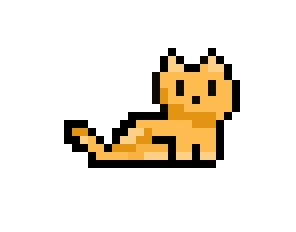

Game Images


Game Title: Whiskey's Adventure
Genre: 2D Platformer
Platform: PC
Engine: Unity
Languages Used: C#
Art Style: Pixel Art

Game Description: Whiskey's Adventure is a 2D platformer game where players control Whiskey, a brave cat on a quest to rescue his kidnapped fellow. Navigate through various worlds filled with obstacles and enemies. Collect fish while avoiding traps and defeating foes to progress through the game. The game features charming pixel art graphics and engaging gameplay mechanics that will keep players entertained for hours.
Key Features:
The tools used in the creation of the game were: Unity the game engine, Krita a digital painting software and Visual Studio Code for scripting . These tools were essential in developing the game concept into a unique experience that complements modern design principles with retro platformer nostalgia.